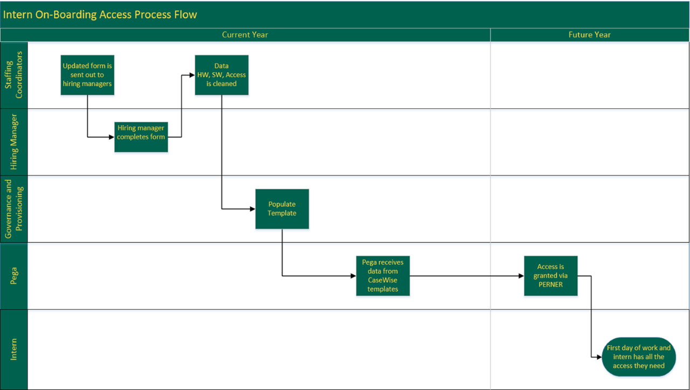

Problem Statement: "Interns have to wait weeks to receive access needed to complete their team's tasks"
Team Members: Patrick Henry, Jason Apinchapong, Tedrick Wong
Interns currently are not able to perform to their maximum potential for at least 1/3 of their internship due to lack of access. Our team's goal is to streamline the on-boarding process by ensuring that all pertinent access information is requested from the hiring manager from the very start of the hiring request. This will allow requests to be submitted to IT prior to the employee's arrival.
After a series of meetings with key stakeholders including Staffing Coordinators, Governance and Provisioning, Talent Acquisition, and HR, I developed a prototype form which captured 3 key data points that we identified to be pain points from previous years.

In the end, these data points were utilized by Staffing Coordinators in the request form they send to hiring managers.
By achieving our goal, we are able to boost productivity man hours and interns are able to utilize the full potential of their time at SCE. We forecast that our proposed improvements will result in 95% on-boarding accuracy by 2023.
Following the value of Continuous Improvement, we also developed several future enhancements for the on-boarding process:
- Utilizing Pega Automation to capture an employee's access in SAP before off-boarding
- Transitioning to a web-based form rather than Excel spreadsheets
- Incorporating feedback questions regarding access on the intern off-boarding form to gauge access performance for that year
- Developing general role mapping templates for ALL positions to prevent an employee starting with no access
Our final proposed process flow:
